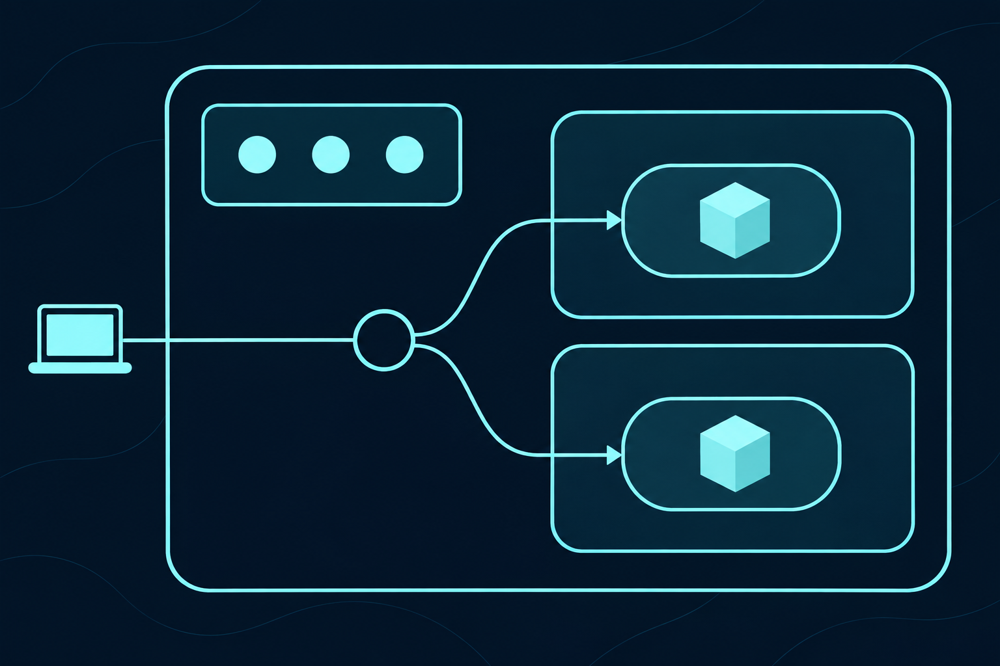
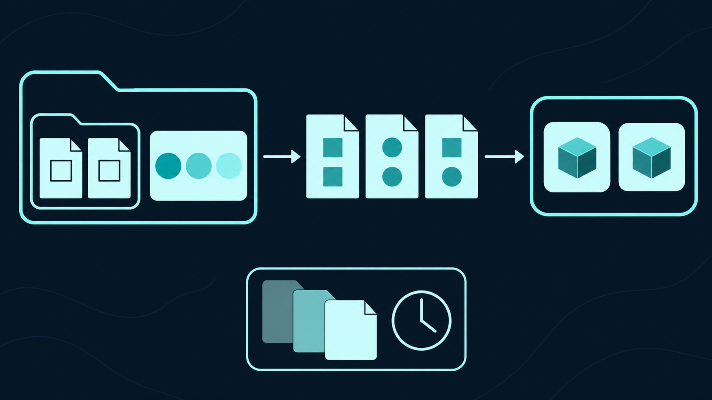
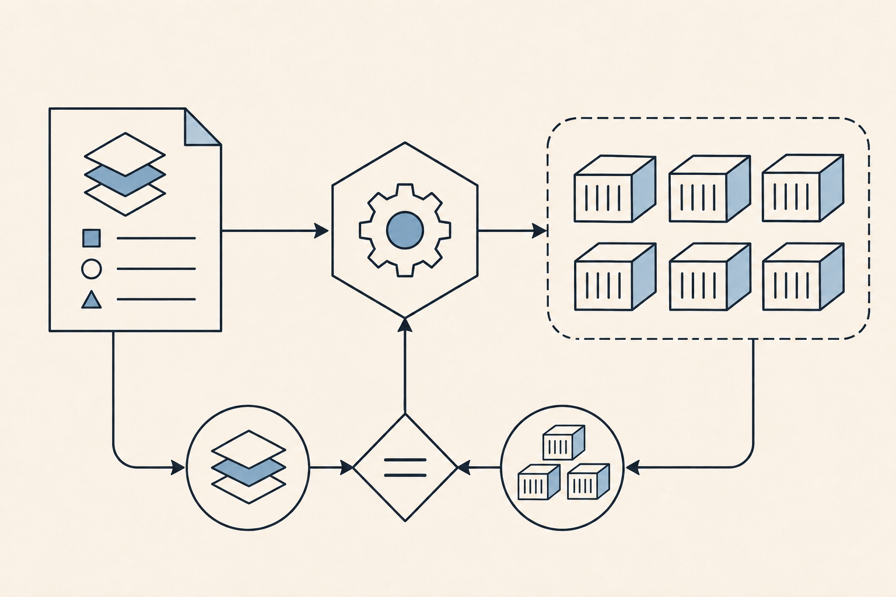

Deployment
Pour des répliques interchangeables. Il pilote des ReplicaSets et les mises à jour progressives.
UN GUIDE POUR DÉVELOPPEURS · DES BASES AU TERRAIN
Kubernetes ne lance pas simplement des conteneurs. Il rapproche en continu le réel de l’état que vous avez demandé.
Commencer le voyageLecture libre · Exemples à adapter · Aucun cluster requis
LA CARTE AVANT LE TERRITOIRE
Une application doit rester disponible malgré les pannes et les changements de trafic. Suivez d’abord un exemple simple, puis explorez les détails de Kubernetes.
AVANT LE VOCABULAIRE
Imaginez un petit site web dans un conteneur : un processus emballé avec ce qu’il lui faut pour démarrer. Une machine tombe, ou le trafic augmente : il faut relancer une copie et savoir où lui envoyer les requêtes. Kubernetes aide à organiser ces tâches sur plusieurs machines.
Un cluster est l’ensemble qui exécute et pilote ces applications. Un node (nœud) est une machine, physique ou virtuelle, du cluster. Un Pod est la plus petite unité déployée : il contient un ou plusieurs conteneurs ; ici, un seul. Un Deployment demande et maintient un nombre de Pods interchangeables. Un Service donne aux clients une adresse stable vers les Pods sélectionnés.

Le plan de contrôle reçoit l’état demandé et organise son application ; les nœuds exécutent les Pods. Si un Pod disparaît, le contrôleur cherche à retrouver le nombre demandé, sous réserve de ressources disponibles. Un Service interne ne rend pas le site public à lui seul : il faut un point d’entrée adapté pour le trafic externe.
Notre fil rouge : une page servie par nginx. Nous allons d’abord lire sa description, puis voir comment Helm fabrique cette même description. Aucune commande n’est exécutée par ce site.
Composants Kubernetes ↗YAML · UN PREMIER MANIFESTE
YAML est un format texte de données. clé: valeur associe un nom à une valeur ; l’indentation avec des espaces indique l’imbrication. Un tiret - introduit un élément de liste. # commence un commentaire. Les nombres ne sont pas entourés de guillemets ici. Les trois tirets --- séparent deux documents dans un même fichier.
Un manifeste est une description d’objet destinée à l’API Kubernetes. Enregistrez les deux documents ci-dessous dans demo.yaml ; les écrire ne modifie encore aucun cluster.
apiVersion: apps/v1
kind: Deployment
metadata:
name: demo
spec:
replicas: 1
selector:
matchLabels:
app: demo
template:
metadata:
labels:
app: demo
spec:
containers:
- name: web
image: nginx:1.27
ports:
- containerPort: 80
---
apiVersion: v1
kind: Service
metadata:
name: demo
spec:
selector:
app: demo
ports:
- port: 80
targetPort: 80Lecture du Deployment : apiVersion choisit l’API, kind le type, metadata.name le nom. spec décrit l’état voulu : replicas demande une copie ; selector.matchLabels identifie les Pods gérés. template est le modèle de chaque Pod : ses labels doivent correspondre au sélecteur. Dans sa spec, la liste containers donne le nom, l’image et le port déclaré du conteneur. Cette déclaration de port n’expose pas à elle seule l’application.
Lecture du Service : v1 et Service identifient l’objet. Son selector cherche le label des Pods, pas le nom du Deployment. port est le port du Service ; targetPort est celui des Pods. Le type omis est ClusterIP : adresse interne, pas publication Internet.
Pour essayer : installez kubectl, l’outil en ligne de commande qui parle à l’API Kubernetes. Il faut un cluster de test accessible, les droits nécessaires et un accès à l’image. Un contexte est une sélection enregistrée associant cluster, identité et éventuellement namespace par défaut. config current-context affiche son nom : vérifiez qu’il désigne bien votre cluster de test avant de continuer ; ce nom seul ne prouve ni les droits ni la destination. Un namespace est un espace de noms qui regroupe des ressources dans un cluster ; il ne choisit pas le cluster. Utilisez un namespace de test dédié et vide déjà existant nommé apprentissage. Vérifiez qu’il ne contient aucune ressource ni release à préserver et que les noms demo sont libres ; en cas de doute ou de collision, arrêtez-vous. Ces commandes ne créent ni ne modifient le namespace lui-même.
Lire les commandes avant de les lancer : -n apprentissage cible ce namespace au lieu du défaut du contexte. apply -f demo.yaml crée ou met à jour les objets à partir du fichier local indiqué après -f. get deployments,pods,services demande la liste de ces trois types. port-forward service/demo 8080:80 choisit un Pod via le Service nommé demo : 8080 est le port local sur votre machine, 80 le port du Service, résolu vers son port cible sur le Pod. curl est un client HTTP ; http://localhost:8080 vise ce port local. delete -f demo.yaml supprime les objets décrits par ce fichier dans le namespace ciblé : vérifiez bien le contexte et le contenu du fichier avant suppression. Ces commandes interagissent avec le cluster ; apply et delete le modifient. Le site ne les exécute pas :
kubectl config current-context
kubectl -n apprentissage apply -f demo.yaml
kubectl -n apprentissage get deployments,pods,services
kubectl -n apprentissage port-forward service/demo 8080:80apply -f crée ou met à jour les objets décrits ; get affiche leur état, qui peut prendre du temps à converger. Le dernier processus reste ouvert : dans un second terminal, curl http://localhost:8080 devrait afficher la page nginx si tout fonctionne. Arrêtez le tunnel avec Ctrl+C. Il sélectionne un Pod : ce test ne prouve pas la répartition du trafic. Avant l’exemple Helm, supprimez uniquement ces objets de test avec kubectl -n apprentissage delete -f demo.yaml, pour éviter un conflit de propriété.
HELM · DU MODÈLE AU CLUSTER
Helm est un outil qui assemble et gère des applications Kubernetes. Un chart est un dossier de fichiers ; ses templates sont des modèles, ses values des valeurs d’entrée. Le rendu produit des manifestes Kubernetes. Une release est une installation nommée de ce chart, avec son historique de révisions.

Créez cette arborescence locale. Chaque bloc est le contenu complet du fichier nommé :
demo-chart/
Chart.yaml
values.yaml
templates/
deployment.yaml
service.yamlapiVersion: v2
name: demo-chart
version: 0.1.0Dans Chart.yaml, apiVersion est la version du format de chart, name son nom et version sa version, distincte de l’image applicative.
replicaCount: 1
image: nginx:1.27Ces valeurs par défaut fournissent le nombre de copies et l’image. Dans le template suivant, {{ .Values.replicaCount }} demande au moteur Helm d’insérer cette valeur ; les accolades doubles ne sont pas du YAML Kubernetes valide avant rendu. Le point désigne le contexte du template, et les noms respectent la casse.
apiVersion: apps/v1
kind: Deployment
metadata:
name: demo
spec:
replicas: {{ .Values.replicaCount }}
selector:
matchLabels:
app: demo
template:
metadata:
labels:
app: demo
spec:
containers:
- name: web
image: {{ .Values.image | quote }}
ports:
- containerPort: 80| quote passe la valeur de l’image à la fonction quote, qui l’entoure de guillemets dans le résultat. Les autres champs sont les mêmes que dans le premier manifeste.
apiVersion: v1
kind: Service
metadata:
name: demo
spec:
selector:
app: demo
ports:
- port: 80
targetPort: 80Installez aussi helm, un autre outil en ligne de commande. Depuis le dossier contenant demo-chart, ./demo-chart désigne ce dossier de chart relativement au dossier courant (.). helm lint vérifie le chart ; helm template rend les modèles localement. Dans ce dernier, demo est le nom de release utilisé pour le rendu, suivi du chemin du chart. Ces deux commandes ne l’installent pas :
helm lint ./demo-chart
helm template demo ./demo-chartlint vérifie le chart ; template affiche localement le YAML rendu, sans installer la release. Cherchez replicas: 1 dans la sortie : c’est le résultat attendu, pas un résultat déjà exécuté par cette page. Ensuite, sur le cluster de test et dans le namespace existant, après suppression des objets manuels, voici la lecture du bloc avant exécution : install installe le chart sous le nom de release demo ; get liste les objets du namespace. upgrade met à jour cette release depuis le même chart ; --set replicaCount=2 remplace la valeur par défaut replicaCount pour ce rendu par le nombre 2. history liste les révisions de la release ; rollback la restaure vers le numéro de révision indiqué, ici 1, uniquement si c’est bien la révision voulue. uninstall désinstalle la release et ses ressources gérées. Pour Helm aussi, -n apprentissage choisit le namespace, pas le cluster ; il utilise le contexte Kubernetes configuré. Vérifiez celui-ci avant toute opération :
helm install demo ./demo-chart -n apprentissage
kubectl -n apprentissage get deployment,pods,service
helm upgrade demo ./demo-chart -n apprentissage --set replicaCount=2
helm history demo -n apprentissage
helm rollback demo 1 -n apprentissage
helm uninstall demo -n apprentissageinstall crée la release demo ; get observe les objets. upgrade rend à nouveau le chart avec deux répliques et met à jour la release : la convergence n’est pas instantanée. history affiche les révisions ; ne lancez rollback demo 1 que si la révision 1 est bien celle que vous voulez restaurer. uninstall supprime la release et ses ressources gérées. Ces commandes changent le cluster. Un rollback Helm est une révision de release, distincte d’un rollback de Deployment, et ne restaure pas les données ni les effets externes.
Les noms fixes demo rendent cet exemple facile à lire, mais une deuxième installation dans le même namespace entrerait en conflit : un chart réutilisable doit rendre les noms uniques. Les valeurs sensibles ne doivent pas être placées dans cet exemple.
ARCHITECTURE
Le plan de contrôle prend les décisions globales. Les nœuds font tourner les workloads.
Point d’entrée authentifié et autorisé. L’état est conservé dans etcd.
Scheduler choisit un nœud pour un Pod non affecté. Les contrôleurs comparent état voulu et observé.
Le kubelet veille à l’exécution des Pods qui lui sont affectés ; le runtime exécute leurs conteneurs.
Le réseau du cluster et l’implémentation des Services relient les workloads.
À retenir — Déclaratif ne signifie pas immédiat : capacité insuffisante, quotas ou contraintes peuvent laisser un Pod en attente.
Architecture officielle ↗WORKLOADS
Un Pod regroupe un ou plusieurs conteneurs partageant notamment réseau et volumes. Il est éphémère : ne construisez pas votre identité métier autour de son adresse IP.
Pour des répliques interchangeables. Il pilote des ReplicaSets et les mises à jour progressives.
Pour une identité réseau et un stockage stables par réplique. Il ne remplace ni sauvegarde ni réplication applicative.
Une tâche finie / des tâches planifiées. Prévoyez idempotence, reprises et gestion des doublons.
Réflexe junior Redémarrer un Pod à la main jusqu’à ce qu’il fonctionne.
Réflexe senior Lire événements et logs, corriger la cause dans le modèle contrôlé puis observer la convergence.
RÉSEAU
Un Service sélectionne généralement des Pods par labels et fournit un point d’accès stable. Les EndpointSlices reflètent ses endpoints ; un Pod non prêt n’est généralement pas envoyé dans le trafic normal.
ClusterIP expose à l’intérieur du cluster ; LoadBalancer demande une exposition externe à une implémentation compatible. Ingress ou Gateway API nécessite un contrôleur adapté : créer une ressource ne suffit pas.
Diagnostic — Vérifiez DNS → point d’entrée → Service et son sélecteur → EndpointSlices → readiness et port de l’application. Une NetworkPolicy n’est appliquée que si le plugin réseau la prend en charge.
Services ↗ Gateway API ↗STOCKAGE
Un volume éphémère accompagne le Pod. Un PersistentVolumeClaim (PVC) demande du stockage persistant ; un PersistentVolume (PV) le fournit, parfois provisionné par une StorageClass et un pilote CSI.
Le mode d’accès, la zone, la capacité et la politique de conservation comptent. Un volume persistant n’est pas une sauvegarde : testez la restauration, la cohérence applicative et les conséquences de suppression.
Volumes persistants ↗CONFIGURATION & RESSOURCES
ConfigMap porte la configuration non confidentielle ; Secret est destiné aux données sensibles. Les variables d’environnement ne se mettent pas à jour dans un processus déjà lancé : prévoyez un redémarrage si nécessaire.
Servent notamment au placement : une demande trop élevée peut laisser le Pod Pending ; trop basse masque les besoins réels.
Bornent la consommation. CPU peut être ralenti ; une limite mémoire peut mener à un arrêt OOM. Mesurez avant de choisir.
Readiness indique si l’instance peut recevoir du trafic ; liveness détecte un processus à redémarrer ; startup laisse le temps à une application lente de démarrer. Une dépendance temporairement indisponible ne doit pas forcément provoquer une boucle de redémarrages.
Ressources ↗ Sondes ↗SÉCURITÉ
Namespaces organisent les ressources et les droits, mais ne constituent pas à eux seuls une frontière de sécurité complète. Appliquez RBAC au moindre privilège, limitez les comptes de service, et préférez des images minimales, identifiées et analysées.
Attention Un Secret encodé en base64 n’est pas chiffré. Par défaut il n’est pas chiffré au repos dans etcd : configurez le chiffrement et limitez les accès.
En profondeur Identité, sécurité du Pod, politiques réseau effectivement appliquées, secrets courts et audit se complètent. Un utilisateur autorisé à créer un Pod peut parfois exposer les Secrets accessibles à ce Pod.
DÉPLOIEMENT
Voici un Deployment pédagogique. L’image et le port doivent correspondre à votre application ; la sonde HTTP suppose que /readyz existe. Ne l’appliquez pas tel quel en production. Enregistrez le fichier adapté sous deployment.yaml dans le dossier courant et relisez son contenu avant toute commande.
apiVersion: apps/v1
kind: Deployment
metadata:
name: voyage
spec:
replicas: 3
selector:
matchLabels:
app: voyage
template:
metadata:
labels:
app: voyage
spec:
containers:
- name: web
image: example.com/voyage:1.0
ports:
- containerPort: 8080
readinessProbe:
httpGet:
path: /readyz
port: 8080
resources:
requests:
cpu: 100m
memory: 128Mi
limits:
memory: 256MiLe sélecteur doit correspondre aux labels du template. L’image example.com est un placeholder, pas une image publiée. Helm peut assembler des charts ; Kustomize compose des variantes ; GitOps ajoute une boucle de synchronisation depuis Git. Aucun outil ne remplace la revue, les métriques ni une stratégie de retour arrière.
Dans ce fichier, readinessProbe.httpGet interroge le chemin /readyz sur le port 8080. requests.cpu: 100m demande 100 milli-CPU, soit 0,1 CPU ; requests.memory: 128Mi demande 128 mébioctets et limits.memory: 256Mi fixe la limite mémoire à 256 mébioctets. Pour les commandes ci-dessous, vérifiez le contexte, utilisez le namespace de test dédié apprentissage et assurez-vous que le nom voyage est libre ; sinon arrêtez-vous : apply pourrait modifier un Deployment existant. rollout status observe l’avancement et rollout history liste les révisions. Dans deployment/voyage, le texte avant la barre est le type et celui après est le nom. Une première création n’a pas nécessairement de révision antérieure à restaurer ; un retour arrière exige d’abord de vérifier la révision voulue. Ici, seule la commande apply modifie le cluster.
# Après adaptation, dans un cluster de test connu :
kubectl config current-context
kubectl -n apprentissage apply -f deployment.yaml
kubectl -n apprentissage rollout status deployment/voyage
kubectl -n apprentissage rollout history deployment/voyageVérifiez le contexte et le namespace avant toute commande. Un rollback du Deployment ne restaure pas automatiquement une migration de données.
Deployments et rollout ↗OBSERVABILITÉ & EXPLOITATION
Reliez métriques, logs, traces et événements à un objectif de service. La disponibilité des Pods ne prouve pas à elle seule la disponibilité perçue par les utilisateurs. Dans les exemples suivants, remplacez NOM par le nom réel du Pod dans le namespace ciblé ; sans -n, le namespace par défaut du contexte est utilisé. describe pod affiche ses détails et événements ; logs lit la sortie du conteneur et --previous demande celle de son instance précédente, si elle existe. Ces lectures nécessitent les droits adaptés.
kubectl describe pod NOM : événements, requests, quotas, affinités et volumes.
kubectl logs NOM --previous : sortie précédente, configuration, limites et sondes.
Suivez Gateway, Service, EndpointSlices, readiness et port ; comparez le symptôme au chemin réel.
Pour évoluer : HPA ajuste les répliques selon des métriques disponibles et des bornes ; il ne crée pas magiquement de capacité de nœud. Prévoyez aussi alertes actionnables, budgets de disruption, capacité de réserve et exercices de restauration.
Diagnostiquer les Pods ↗ Autoscaling ↗ATELIER · SIMULATION
Un Deployment annonce trois répliques. Le Service sélectionne app: voyage. Les Pods existent mais leur sonde readiness échoue. Choisissez une hypothèse puis ouvrez sa réponse.
Pas nécessairement. Une adresse stable ne garantit pas des endpoints prêts. Inspectez le Service et ses EndpointSlices avant de conclure.
Oui. Une readiness en échec peut retirer les Pods des endpoints prêts. Vérifiez le chemin, le port, la réponse de l’application et les événements : la sonde signale un symptôme, pas sa cause.
Pas si toutes échouent pour la même raison. Plus de copies du défaut n’établissent pas la disponibilité.
Simulation locale : aucun cluster interrogé, aucune commande exécutée, aucun résultat réel produit.
À GARDER SOUS LA MAIN
Décrire l’intention, observer le réel, comprendre l’écart.

Un manifeste décrit l’état souhaité. L’API reçoit les objets ; les contrôleurs comparent cet état à l’état observé et agissent pour rapprocher les deux, dans la limite des ressources disponibles.
Cluster : ensemble piloté et machines d’exécution. Node : machine du cluster. Pod : unité d’exécution de conteneurs. Deployment : gestion de répliques et mises à jour. Service : point d’accès stable vers les Pods sélectionnés.
Ces commandes consultent le contexte ou le cluster, sans modifier les objets. Elles demandent les droits adaptés et peuvent révéler des informations sensibles dans leurs résultats. apprentissage, demo et voyage sont des exemples : remplacez-les par votre namespace, votre Pod et votre Deployment.
kubectl est le client de l’API ; -n cible un namespace pour une commande. Vérifiez d’abord le contexte : il détermine le cluster et l’identité utilisés.
kubectl config current-contextkubectl -n apprentissage get podskubectl -n apprentissage describe pod demokubectl -n apprentissage logs demokubectl -n apprentissage rollout status deployment/voyagePour un Pod à plusieurs conteneurs, précisez le conteneur avec -c NOM. La dernière commande attend la fin du déploiement ; interrompez l’attente avec Ctrl+C.
FIN DU PARCOURS · DÉBUT DE L’EXPLORATION
Revenez à la boucle : intention, observation, écart, action. Puis vérifiez que le service rendu à vos utilisateurs s’améliore vraiment.
Revoir la carte ↑